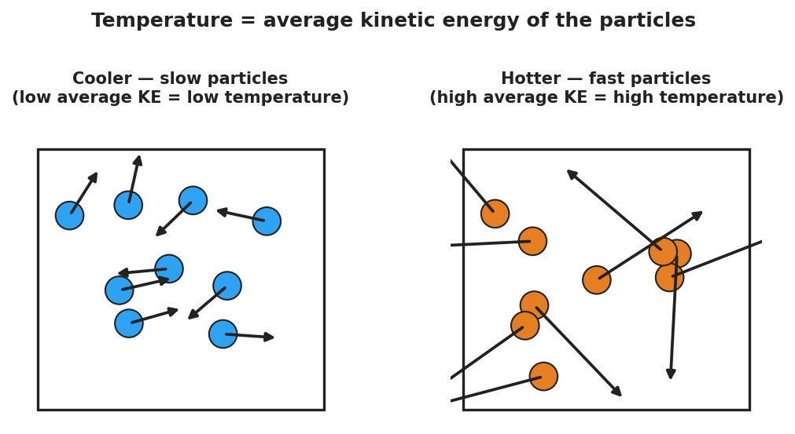

Unit: Thermal Energy & Conservation — Lesson 01: Thermal Energy and Temperature
Phenomenon
A lit sparkler burns at over 1,000 °C — yet a child can hold it inches away and be fine. A warm bath is only about 40 °C, but if that water were ever 1,000 °C it would be deadly. Same temperature idea, wildly different danger.

Driving Question
What is the difference between something being hot and something holding a lot of energy?
Notice & Wonder
Compare the tiny, fiercely hot sparkler with the large, only-warm bath. Write two things you notice and two things you wonder. Use the word particles if you can.
Initial Model
Sketch the particles inside the sparkler tip and inside the bathtub. Use arrow length to show how fast each particle moves, and dots to show how many there are. Then write one sentence: which has faster particles, and which has more total particle motion?
Investigate
Set the temperature (how fast the particles move on average) and the amount of substance (how many particles there are). The bars compare a small cup and a large pool at that same temperature. Notice: temperature is the same for both, but the total thermal energy is not.
Both containers are at the same temperature, so their particles move at the same average speed. The pool holds 8× as many particles, so it holds far more total thermal energy.
Make It Make Sense
- A cup of tea and a backyard pool both read 30 °C. Which has more thermal energy, and why?
- Why is a sparkler safe to hold even though it is far hotter than bathwater?
- If you double the amount of water but keep the temperature the same, what happens to the average particle speed? What happens to the total thermal energy?
Stuck? Sentence frame
"The ___ has a higher temperature because its particles move ___, but the ___ has more thermal energy because it has ___ particles."
Key Vocabulary (max 3)
- temperature — a measure of the average kinetic energy of the particles in a substance (how fast they move, on average)
- thermal energy — the total kinetic energy of all the particles; depends on temperature and the amount of substance
- kinetic energy — the energy an object or particle has because of its motion
Revise Your Model
Return to your particle drawing. Re-label one side "high average KE = high temperature" and use dots to show the total amount of substance. Rewrite your one-sentence explanation using the words temperature and thermal energy.
Return to the Phenomenon
Why would a single drop of boiling water sting but not seriously burn, while a whole bathtub at the same 100 °C would be deadly? Answer in one sentence using temperature and thermal energy.
Exit Ticket + Closing Reflection
- A lit sparkler tip is about 1,000 °C. A warm bath is about 40 °C.
(a) Which has the higher temperature, and what does temperature measure about the particles?
(b) Which one could transfer more thermal energy to your body, and why?
(c) Two buckets of water read exactly 25 °C, but one holds 1 L and the other holds 50 L. Which has more thermal energy? Explain. - Reflection: What is one idea today that changed how you think about "hot"? Who helped you make sense of it?